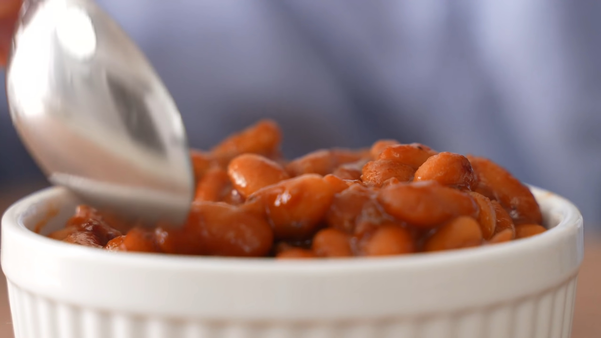

Baked Beans

Description
Smoky tender baked beans go great with smoked or grilled meats!
Ingredients
- 175g/6oz chopped bacon
- 150g (1 medium) white onion, small diced
- 50g (2 small) jalapenos, small diced
- 15g (5-6 cloves) garlic, minced
- 325g or 1.5c ketchup
- 100g or 1/4c molasses
- 50g or 1/4c brown sugar
- 30g or 1 3/4 Tbsp worcestershire
- 30g or 2Tbsp yellow mustard
- 30g or 2Tbsp hot sauce
- 20g 1Tbsp + 1/2tsp apple cider vinegar
- 7g or 1Tbsp chili powder
- 2g or 1tsp black pepper
- 2x 425g//15oz cans cannellini beans with liquid
- 4x 425g/15oz cans cannellini beans, rinsed
- 200-400g or 3/4 - 1.5c water
Steps
- Add bacon to a heavy bottomed pot over medium heat
- Stir and render fat for 10-15 minutes until golden
- Add in diced onion, jalapeno, and garlic
- Stir, scraping up any bacon fond
- Cook for about 10 min or until veggies have softened
- Add ketchup, molasses, brown sugar, worcestershire, mustard, hot sauce, vinegar, chili powder, and pepper. Stir to combine
- Add beans and about 200g water, stir
- Add additional 200g of water if needed
- Gently stir and bring to a simmer
- Load into a 350F oven to bake for 90 minutes, gently stirring 2-3 times during baking
- Beans are done when thickened, but still a little saucy
- Add water or sauce to thin slightly if needed